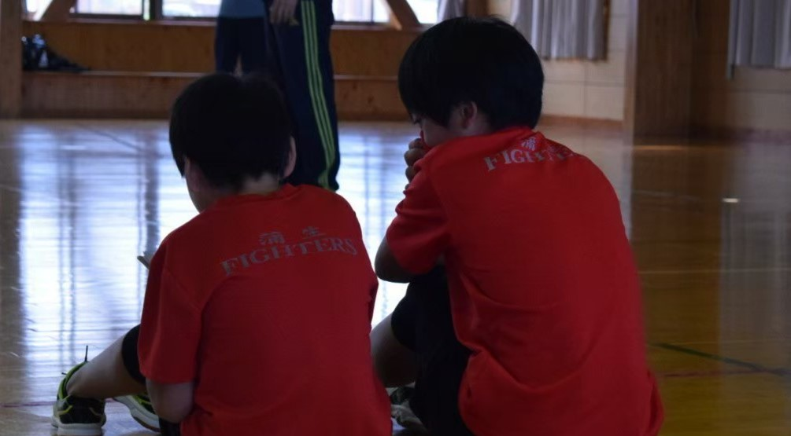
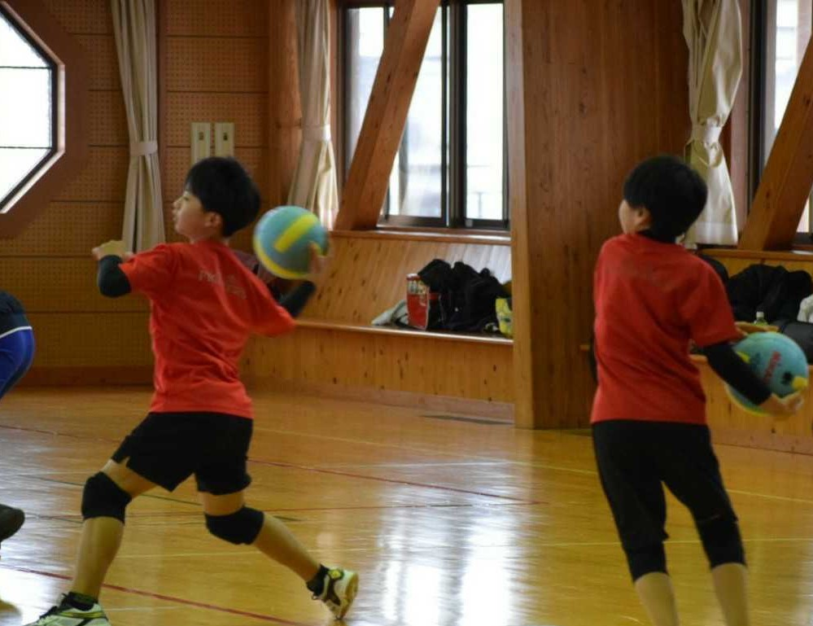
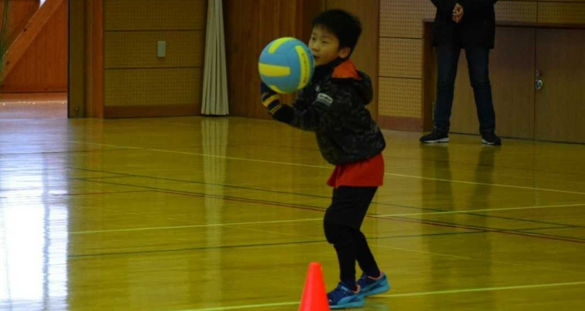
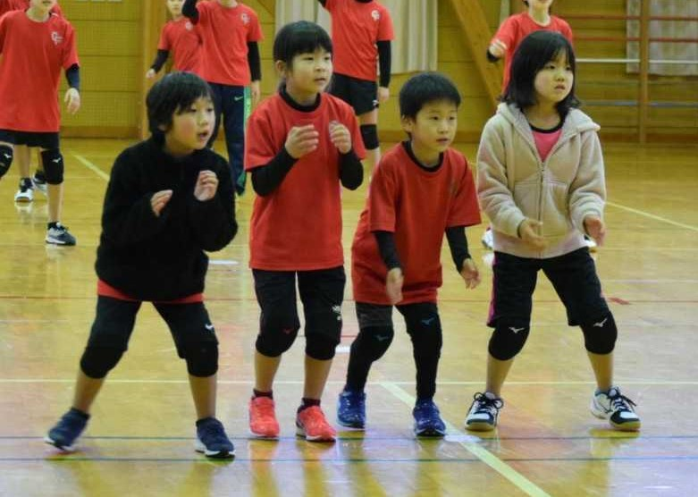
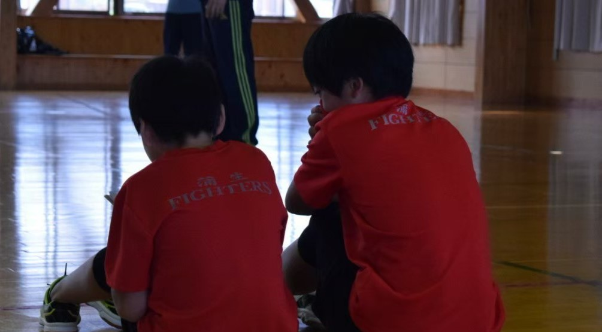
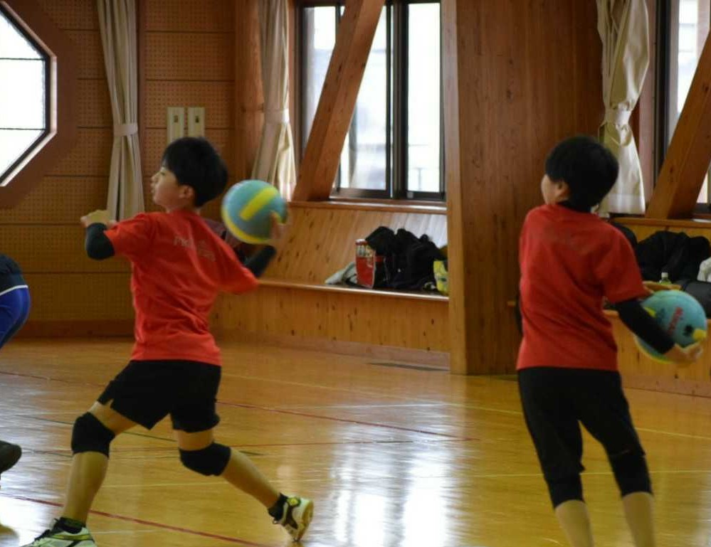
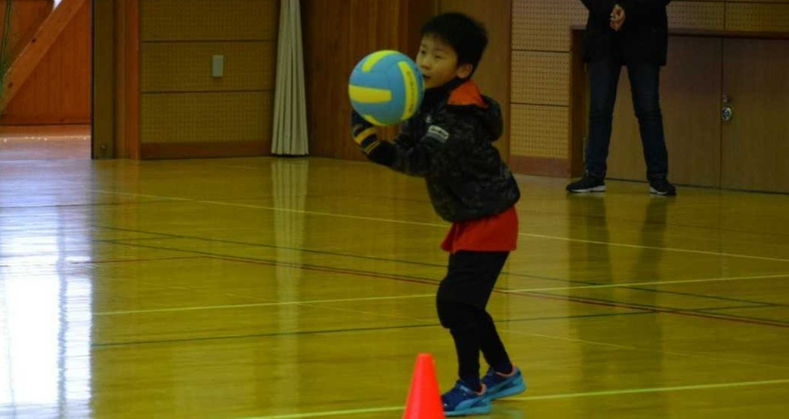
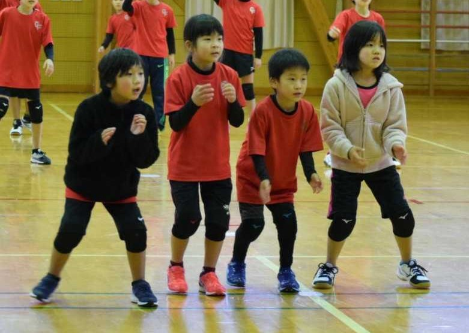

蒲生ファイターズは滋賀県東近江市桜川町の蒲生東小学校の体育館で活動している ドッジボールのスポーツ少年団です。
練習は毎週 火曜日 木曜日 19:00～20：30 日曜日 9:30～15:00です。
公式の試合として1年生から4年生までが出場できるジュニアの部、3年生から6年生 までが出場できるオフィシャルの部があります。
また、双方ともに男女関係なく出場することができます。
ドッジボールが好きな人たちの集まりの場所です。 興味があれば見学や体験はいつでも行うことができます。
受付はページ右上にある、三本線マークをタップしていただくと出てくる、 「お問い合わせ」という項目を選択し、Twitter Instagram から選んでお問い合わせください。


ドッジボールの練習の日には早く行こうとせかされてしまいます。 練習の終わった後の車の中ではその日の練習のことなどとても楽しそうに話しています。
学年が上がれば色々な事を体験し感じるようになり、 楽しいだけではないスポーツの厳しさも知っていくと思います。
これからも大好きなドッジボールを続けてどんどん成長してほしいです。